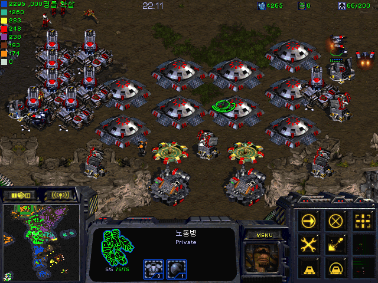
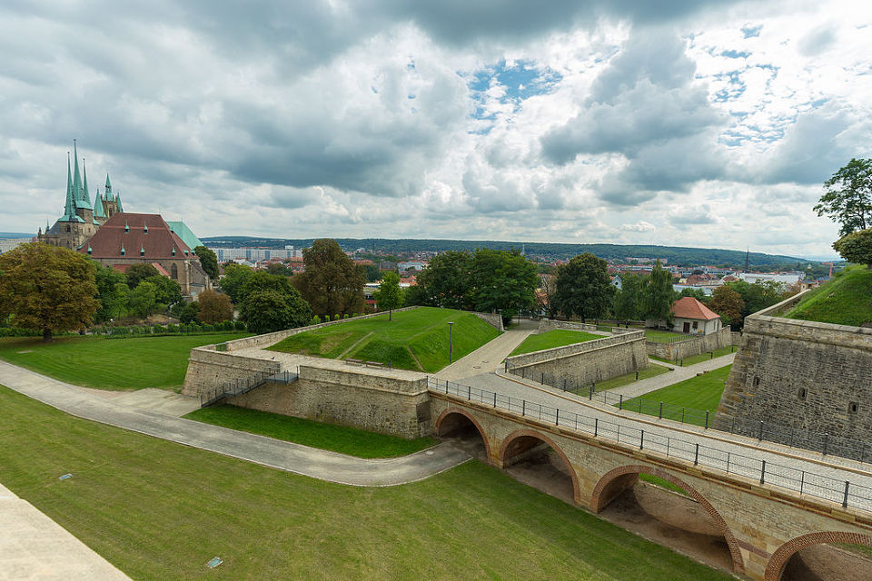
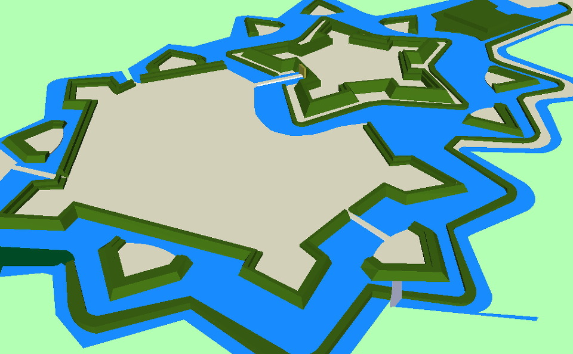
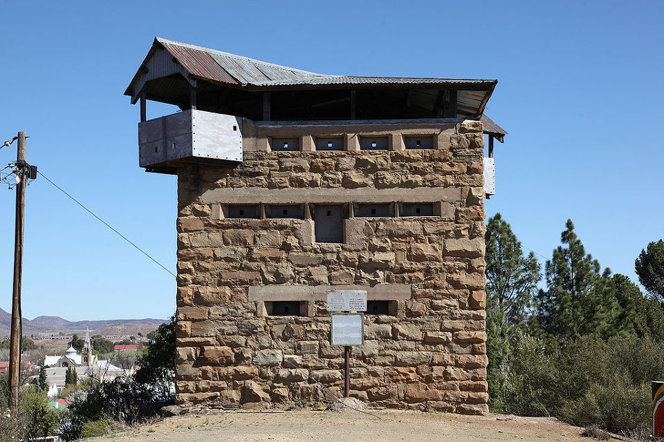
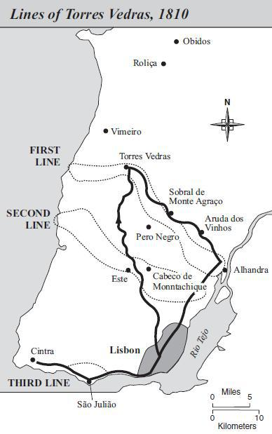
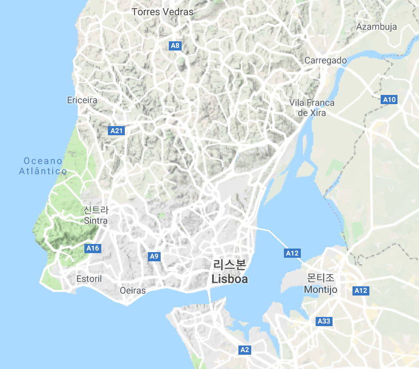
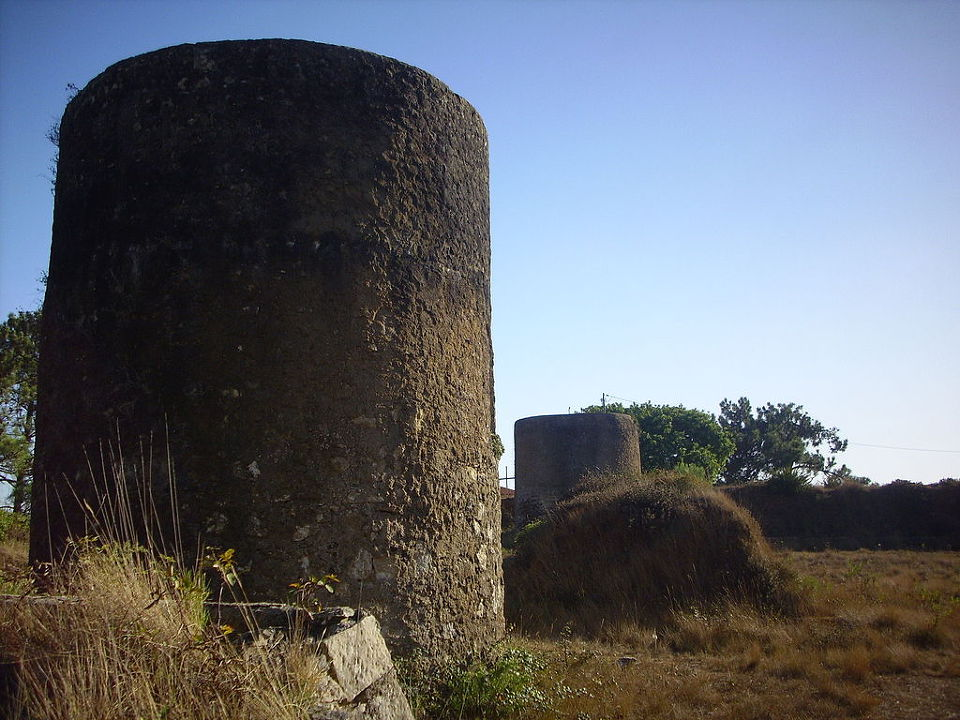
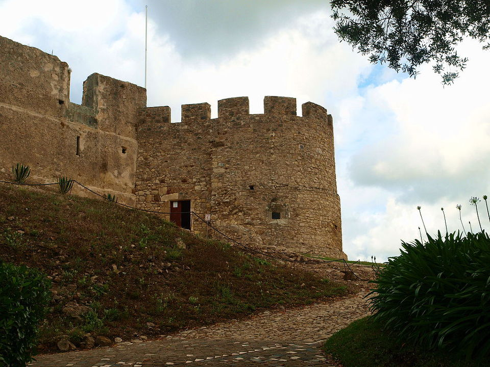
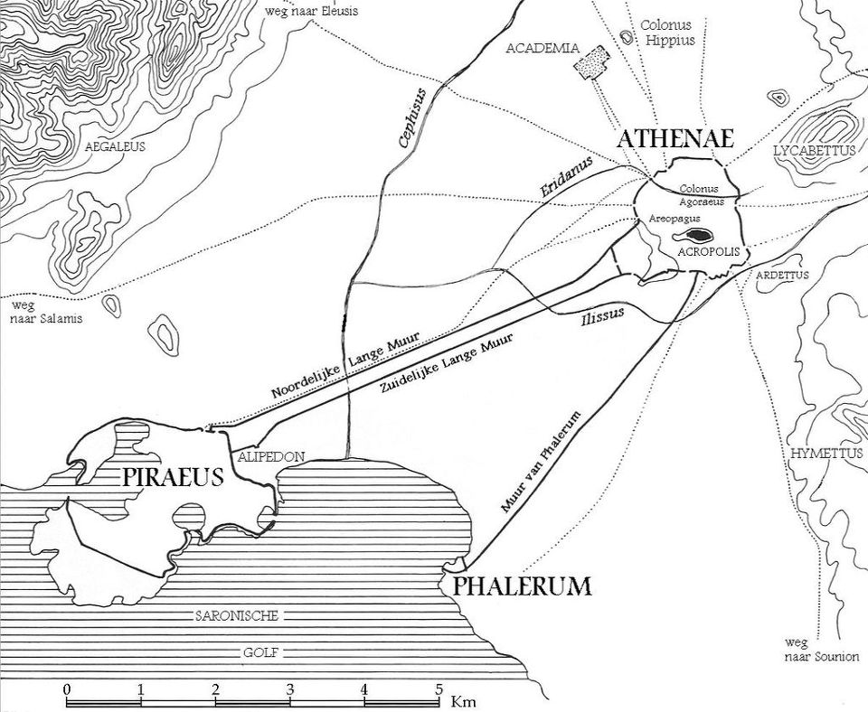

무지막지한 도배질 - 토헤스 베드하스(Torres Vedras) 방어선
게시: 2018-12-03T06:30:00+09:00
10월 5일, 프랑스군 전위 부대에게 사로잡힌 영국군 포로들이 이상한 소리를 한다는 보고가 마세나에게 들어왔습니다. 영국군이 서둘러 '방어선 쪽으로' 후퇴하고 있다는 이야기였습니다. 여태까지 마세나는 웰링턴이 1809년 1월 코루냐로 후퇴하던 무어 장군과 똑같은 신세라고 생각하고 있었습니다. 그러니까 최악의 경우라고 해봐야 웰링턴의 영국군을 섬멸하지 못하고 놓치는 정도이고, 리스본 함락은 따놓은 당상이라고 생각했었던 것입니다. 그런데 이 영국군 포로 취조 보고서에 따르면 웰링턴의 목적지는 리스본 항구에 정박한 영국 수송선이 아니라 어디엔가 구축해 놓은 방어선이라는 이야기가 되는 셈이었습니다. 하지만 여전히 마세나는 자신감에 차있었습니다. 부사쿠 능선 같은 천혜의 방어선조차도 (비록 빙 우회하느라 시간은 걸렸지만) 간단히 돌파했는데, 영국군이 리스본 앞에 무슨 병정놀이 방어선을 구축한다고 해봐야 문제될 것이 없다는 생각에서였습니다.
프랑스군이 그 방어선이라는 것의 실체를 처음 접한 것은 그로부터 또 일주일이 지난 뒤의 일이었습니다. 10월 11일, 소브랄(Sobral)이라는 작은 마을에 영국군 1개 중대 정도가 전초 진지를 마련하고 있는 것을 몽브렁(Montbrun) 장군의 기병대가 발견했습니다. 문제는 이 마을도, 그 마을에 들어앉은 영국군 부대도 아니었습니다. 그 마을 뒤에는 낮고 긴 언덕이 병풍처럼 늘어져 있었는데, 그 언덕 위에 일련의 요새들이 주르르 늘어서 있는 것이 프랑스군 기병대의 눈에 들어왔습니다.
다음날 현장에 도착한 쥐노(Junot)의 보병 사단이 소브랄 마을의 영국군을 간단히 내쫓았으나, 이들이 도망쳐 들어간 언덕 위의 요새들은 쉬운 상대가 아니었습니다. 현장에 도착해 직접 이 영국군의 방어선을 본 마세나는 입이 딱 벌어졌습니다. 언덕 위의 영국군 방어선이라는 것은 하나의 길고 높은 벽이 아니었고 일련의 보루(redoubt)와 옹벽(ravelin), 강화진지(blockhouse) 등으로 이루어진 느슨한 형태의 것이었는데, 이런 각각 독립된 보루들은 상호 지원이 가능한 거리 내에 위치하여 어느 하나를 돌파하기가 쉽지 않도록 설계되어 있었습니다. 특히 바로 10여일 전에 부사쿠 능선에 자리 잡은 영국군의 철벽 방어를 경험한 마세나로서는 저렇게 대포와 참호, 옹벽으로 도배질 이 된 방어선 뒤에 틀어박힌 영국군을 공격할 엄두가 나지 않았습니다.

(젊음을 스타크래프트에 바쳤던 저로서는 그 느낌 알지요.)


(제가 옹벽이라고 번역해놓은 ravelin은 윗 그림과 사진에서 성벽 앞에 위치한 쐐기 모양의 낮은 외벽을 뜻합니다. 성벽 본체 앞에 저런 쐐기 모양의 벽을 배치하고 거기에 대포와 수비병을 보강하여 성벽 본체를 더 강화하는 것이 목적입니다. 윗 사진은 토헤스 베드하스 방어선의 일부는 아니고, 다른 지역의 요새 사진입니다.)

(제가 강화진지라고 번역해놓은 blockhouse의 모습입니다. 보통 여기에 대포도 장착하여 적은 병력으로도 다수의 적에 대항하여 버틸 수 있도록 한 작은 요새라고 보시면 됩니다. 당시 영국 해변에 많이 설치된 마르텔로(Martello) 탑도 blockhouse의 일종입니다.)
마세나는 두가지 점에서 크게 놀랐습니다. 먼저 영국군 방어 진지의 규모와 견고함에 놀랄 수 밖에 없었습니다. 저렇게 길고 견고한 방어선을 구축한다는 것은 프랑스군으로서는 상상하기 어려운 일이었거든요. 무엇보다 기동성을 중시하고 적 야전군의 격파를 노리는 프랑스군이라면 저렇게 막대한 예산을 들여 오랜 시간 삽질을 하느니 차라리 그 예산으로 총과 대포, 수송용 말과 노새를 더 구입하여 병력을 더 충원하고 훈련시켰을 것입니다. 저 방어선은 정말 영국군처럼 돈과 물자가 풍부한 대신 병력이 부족한데다 방어전에 특화된 군대에게나 어울리는 것이었고, 또 영국군에게만 가능한 물건이었습니다.
마세나가 놀란 이유는 하나 더 있었습니다. 실은 놀랐다기 보다는 어이가 없었다는 표현이 더 어울리는 일이었지요. 바로 10여일 전 부사쿠 능선을 우회하여 돌파한 것처럼 저 방어선도 굳이 돌파하지 않고 그냥 우회하면 간단히 해결될텐데, 웰링턴은 대체 무슨 생각으로 저런 무식한 방어선을 구축해놓은 것일까요 ? 설마 저 방어선이 테주(Tejo) 강부터 바다까지 연결된 것도 아닐텐데 말입니다.
그런데 정말 그 방어선은 테주 강부터 시작하여 바다까지 뻗어 있었습니다 ! 이 방어선을 우회할 길을 찾기 위해 방어선의 양측면으로 출동한 기병대는 가도 가도 저 방어선이 끝나지 않고 계속 이어지는 것을 보고 아연실색할 수 밖에 없었습니다. 도대체 언제부터 준비를 했길래 이렇게 엄청난 규모의 방어선을 구축해놓았던 것일까요 ?

(저 지도에서 점선으로 되어 있는 것이 토헤스 베드하스 방어선입니다. 보시다시피 1차선과 2차선, 최종적으로 3차선까지 준비되어 있었습니다. 마세나는 저 1차선조차도 돌파할 엄두를 내지 못했습니다.)
마세나가 만난 방어선은 약 1년 전인 1809년 11월부터 건설에 들어갔었고, 영국-포르투갈 측에서는 이 방어선을 토헤스 베드하스(Torres Vedras) 방어선이라고 불렀습니다. 최북방의 거점 마을이 토헤스-베드하스라는 이름이었기 때문이었지요. 이 엄청난 시설물은 1809년 7월 스페인 탈라베라(Talavera) 전투에서 웰링턴이 승리하고도 허겁지겁 도망쳐야 했던 쓰라린 기억 때문에 만들어진 것이었습니다. 당시 웰링턴의 영국군은 주르당의 프랑스군의 공세를 잘 막아냈으나, 측면에서 술트가 예상보다 큰 규모의 프랑스군을 이끌고 온다는 첩보를 접하고는 걸음아 날 살려라하면서 내빼야 했지요. 그때의 경험에서, 웰링턴은 수적으로 우세한 프랑스군을 상대하기 위해서는 결국 야전으로는 승산이 없고 방어전을 펼쳐야 하는데, 그러자면 영국과의 보급선 기지인 리스본을 사수하기 위한 굳건한 진지가 꼭 필요하다는 결론을 내렸던 것입니다.
이 방어선의 초안을 만든 것은 아이러니컬하게도 프랑스군이었습니다. 1807년 쥐노(Junot)가 이끈 제1차 포르투갈 정복 때, 쥐노의 부하 중 벵상(Vincent)이라는 대령이 리스본 주변의 지형을 관찰한 뒤 이런 방어선이 가능하겠다는 초안을 만들어 쥐노에게 제출한 바 있었습니다. 물론 쥐노에게는 그런 방어선을 만들 필요도 시간도 재원도 없었지요. 그런데 그 보고서가 돌고 돌아 결국 영국-포르투갈 연합군의 손에 들어갔고, 네바 코스타(Neves Costa)라는 포르투갈군 소령에 의해 좀더 구체화된 뒤에 웰링턴에게 채택된 것이었습니다.

(리스본 일대의 지형입니다. 보시다시피 리스본은 사실상 작은 반도의 남쪽 끝에 붙어 있었으므로, 테호 강과 대서양 사이에 철통 방어선을 구축하는 것은 어렵긴 해도 불가능하지는 않은 일이었습니다.)
이 방어선은 리스본 북쪽의 지형이 꽤 험하다는 점과, 테주 강이 바다와 만날 때 거의 큰 만이라고 착각할 정도로 넓은 하구를 구성한다는 점, 그리고 영국 해군이 제해권을 장악했기 때문에 가능했던 것입니다. 리스본은 그 거대한 테주 강 하구의 북쪽 강안에 자리잡고 있었기 때문에 사실상 작은 반도의 남쪽 끝에 자리잡았다고 할 수 있었습니다. 따라서 북쪽의 험한 지형의 언덕들을 잘 이어 붙이면 테주 강부터 대서양 연안까지 이어지는 30~40km 정도 길이의 방어진지를 만들 수 있었습니다. 부사쿠 전투 때 웰링턴이 요새도 없이 그냥 능선에 의지하여 펼쳤던 방어선의 길이가 약 10km 남짓했다는 점을 생각하면, 요새와 옹벽 등으로 강화한 방어선을 40km 정도 펼치는 것은 불가능한 일이 아니었습니다. 돈과 시간이 남아도는데다 주도면밀하기까지 했던 웰링턴은 한줄의 방어선으로는 안심이 안 되어 약 10km 후방에 더 견고한 제2 방어선을 또 구축했고, 또 리스본 서쪽 강가에의 사오 줄리오(São Julião)에는 작은 규모로 제3의 방어선까지 구축했습니다. 게다가 리스본의 남쪽을 가로막은 테주 강 하구는 거의 바다라고 생각될 정도로 넓어서, 제해권을 장악하지 않는 이상 도하가 불가능했습니다.

(현재의 토헤스-베드하스 방어선은 윗 사진과 같은 주요 성채와 보루 등만 일부 남아 있습니다.)

(토헤스 베드하스 방어선의 일부로 편입된 기존 성채의 모습입니다. 토헤스 베드하스는 이렇게 기존 시설과 자연 지형을 최대한 활용했습니다.)
그렇다고 웰링턴이 자신의 군사적 무능함을 돈과 물자로 때우려는 무식한 작전에만 의지한 것은 아니었습니다. 먼저, 이 방어선을 구축하는데 든 시간은 고작 11개월, 비용은 10만 파운드(현재 가치로 대략 250억원)에 불과했습니다. 당시 웰링턴이 포르투갈 주재 영국 대사인 존 빌리어스(John Villiers)에게 보낸 편지에 따르면 영국군이 포르투갈에서 작전하기 위해 필요한 예산이 매달 20만 파운드라고 했으니 저 정도 예산이면 정말 합리적인 비용으로 극강의 효과를 보여준 방어선을 구축한 셈이었습니다. 이는 지형 지물을 매우 효율적으로 활용한 영국군 공병대의 기술적 우수성과 함께 나라를 지키겠다는 포르투갈 노동자들의 열정이 낳은 결과였습니다. 특히 1년 간이나 이 정도의 대공사를 진행하면서도 프랑스 측에 정보가 새어나가지 않은 것은 정말 경탄할 만한 일이었습니다. 실은 프랑스 측 뿐만 아니라 영국군 병사들과 포르투갈 시민들조차도 리스본 북쪽에 그렇게 거대한 프로젝트가 진행 중이라는 것을 거의 모르고 있었다고 하니, 보안에 정말 철저했던 모양입니다. 덕분에 마세나도 이 벽에 부딪힌 뒤 어쩔 줄 몰라했던 것이지요.
또한 웰링턴이 마세나를 위해 준비한 것은 이 토헤스-베드하스 방어선 하나 뿐만이 아니었습니다. 벽은 벽일 뿐, 벽으로 적을 몰살시킬 수는 없었지요. 마세나의 프랑스군을 궤멸시킬 웰링턴의 비장의 무기는 별도로 준비되어 있었고, 마세나가 이 방어선 앞에서 입을 헤 벌리고 있는 사이 이미 작동을 개시한 상태였습니다.

(이렇게 바다까지 이어지는 철통 방어의 선구자는 아테네와 피라에우스 항구를 연결하는 아테네의 장성이 있었습니다. 당시 이 벽의 길이는 6km에 달했지요. 그러나 나폴레옹은 일찌기 '벽 뒤에 숨는 자는 결국 진다' 라고 말한 바가 있었고, 결국 아테네는 스타르타에게 패배하지요. 하지만 그렇게 말한 나폴레옹 자신도 생-장-다크레의 성벽 뒤에 숨은 투르크군에게 패배당하기는 했습니다.)
Source : http://www.historyofwar.org/articles/campaign_massena_portugal.html
https://www.lifeofwellington.co.uk/commentary/chapter-twenty-three-torres-vedras-october-1810-to-february-1811/
http://www.historyofwar.org/articles/wars_peninsular.html
https://en.wikipedia.org/wiki/Lines_of_Torres_Vedras
http://www.historyofwar.org/articles/lines_of_torres_vedras.html